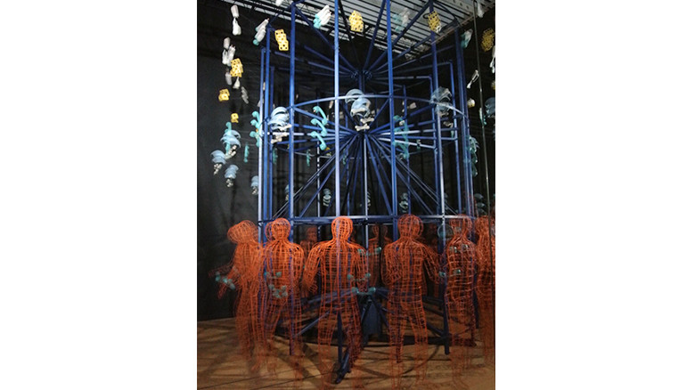

idea

Gregory Barsamian
http://www.gregorybarsamian.com/-どんな人
円周上に少しづつ形が変化した彫刻を配置して、回転させ、ストロボを明滅させることで、まるで彫刻が目の前で形を変えて行くような作品をつくっているアーティストです。
-解説
原理は前述した通りですが、実際生でみると、ストロボの明滅が激しく、本当に彫刻が動いているように見えます。(普通に目に悪いです。) ゾートロープという仕組みを用いてより大きく、生で体感できるような作品にしているようです。
-好きなところ
単純に立体物が生命を吹き込まれたように動き出すのはインパクトがあって好きです。